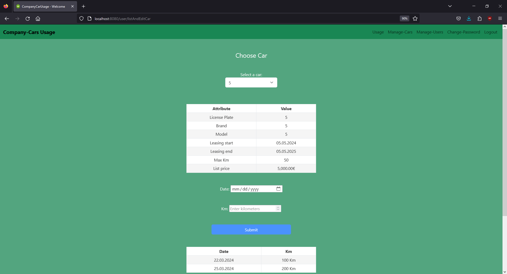

Hi, ich bin
Triantafyllos Mylonas

Fachinformatiker für Anwendungsentwicklung – heute in der Daten- und Systemintegration zuhause.
Mich interessiert nicht nur, dass etwas funktioniert – sondern warum. Deshalb schaue ich gerne hinter die Kulissen von Systemen, Schnittstellen und Netzwerken.
↓ scroll runter
01. Über mich
Ich bin glücklich verheiratet und stolzer Vater eines wunderbaren Kindes. Meine Freizeit verbringe ich am liebsten vor dem Computer, aber auch auf Reisen mit meiner Familie. Eine gemütliche Tasse Kaffee in netter Gesellschaft schlage ich nie aus – und ja, ich bin nach wie vor großer Fan von Iron Man und dem Marvel-Universum 😉.
Der Computer ist für mich längst mehr als ein Arbeitsinstrument – er ist ein Werkzeug, mit dem ich verstehen will, wie Dinge im Hintergrund wirklich funktionieren. Meine Ausbildung zum Fachinformatiker für Anwendungsentwicklung habe ich 2024 abgeschlossen. Seitdem arbeite ich im Bereich Datenintegration und wachse Schritt für Schritt in Richtung Data Engineering, DevOps und Netzwerktechnik.
02. Was ich heute mache
Junior Data Integration Expert
Schnellecke Logistics, Wolfsburg
Ich verbinde über 10 interne und externe Systeme miteinander – darunter SAP S/4HANA, ein Warehouse-Management-System, EDI-Partner wie Automobilhersteller, SharePoint und weitere interne Plattformen. Dafür nutze ich vor allem die Integrationsplattform Lobster.
- EDI-Routing und Partneranbindungen
- REST- und GraphQL-API-Integrationen
- Automatisierung mit PowerShell- und Python-Skripten
- Dafür sorgen, dass Daten sauber und zuverlässig zwischen Systemen fließen
- Helfen zu Ausbildenen Betreuung
03. Wohin ich mich entwickle
Ich bin kein Senior und auch kein Experte – sondern jemand mit einem soliden Fundament und echter Neugier. Mich interessiert, immer wieder Neues zu lernen und zu verstehen, wie es funktioniert – deshalb experimentiere ich auch gerne mit meinem Homelab. Die Zeit, die mir neben Familie und Job bleibt, nutze ich, um Neues auszuprobieren und dazuzulernen. Nach der Ausbildung hat mich mein Weg in die Datenintegration geführt – anfangs war ich skeptisch, mittlerweile finde ich es richtig spannend und habe viel dabei gelernt. Ich bin gespannt, was die Zukunft noch bringt.
04. Homelab & Selbstlernen
Privat betreibe ich mein eigenes Homelab – einfach, weil es mir Spaß macht. Ein Mini-PC und ein NAS bilden die Basis, Docker und Portainer verwalten meine selbst gehosteten Services. Dazu kommen AdGuard Home, Cloudflare Tunnel und Tailscale, um Netzwerk und Zugriffe sauber zu organisieren. Was ich lerne, halte ich in Obsidian als Zettelkasten fest.
Ich lerne am besten, indem ich zuhause etwas baue – und auch mal kaputt mache.
05. Skills
Aus der Ausbildung
Ausbildung
Integration & Daten
täglich im Einsatz
Homelab & Self-Hosting
privates Lernen
06. Projekte
Im zweiten und dritten Jahr meiner Ausbildung habe ich mich intensiv mit Java und objektorientierter Programmierung beschäftigt – von den Grundprinzipien wie Klassen, Vererbung und Interfaces bis hin zum Spring-Ökosystem (Spring Boot, JPA, Thymeleaf, Spring Security, Lombok, Maven). Die drei Projekte hier sind das Ergebnis dieser Reise, vom Excel-Vergleichstool bis zur vollständigen Webanwendung mit Login und Datenbank als Abschlussprojekt. Sie sind geistiges Eigentum von Schnellecke Logistics.
Frühere Projekte aus der Ausbildung

Abschlussprojekt · März–April 2024
Kilometerstände-Erfassung für die Leasingflotte
Mein Abschlussprojekt der Ausbildung: eine Webanwendung (Spring Boot/Java, Bootstrap, MariaDB), die den bisherigen manuellen Prozess ersetzt, bei dem Mitarbeiter ihre Kilometerstände per E-Mail meldeten. Mitarbeiter loggen sich ein und melden monatlich ihren Kilometerstand (keine rückwirkende Änderung möglich), der Fahrzeugverwalter behält den Überblick über die gesamte Leasingflotte, und bei fehlender Meldung verschickt das System automatisch eine Erinnerung.

Add Barcode to PDF
Ein Programm (WPF, C#), das es ermöglicht, Barcodes in PDF-Dokumente einzufügen, ohne dass die Dokumente manuell geändert werden können, wenn der Benutzer die Barcodes eingibt und speichert.

Excel Bestandsvergleich
Ein Programm (Desktop-App, Java), das zwei Excel-Dateien vergleicht und eine dritte Excel-Datei erstellt, die nur die unterschiedlichen Daten der beiden Dateien zeigt und speichert.
Homelab- / Data-Projekt
Hier entsteht bald ein Projekt aus meinem Homelab bzw. dem Datenbereich. [Platzhalter]